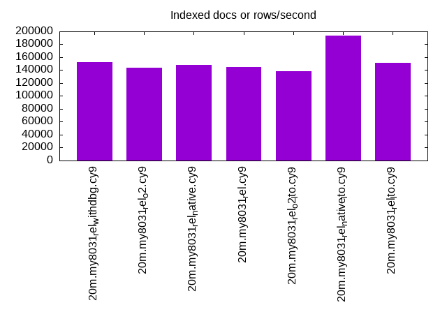
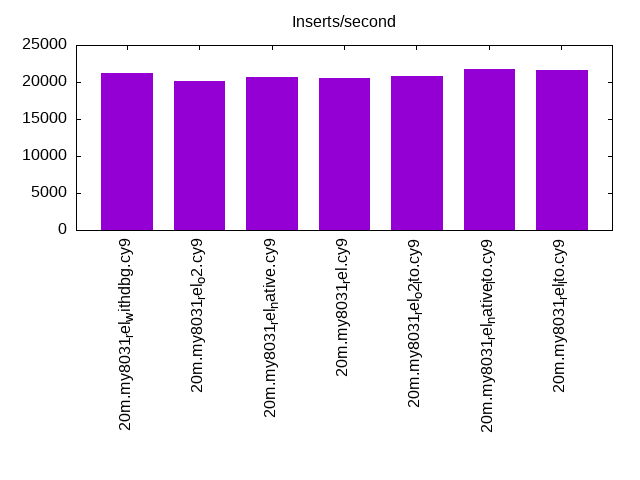
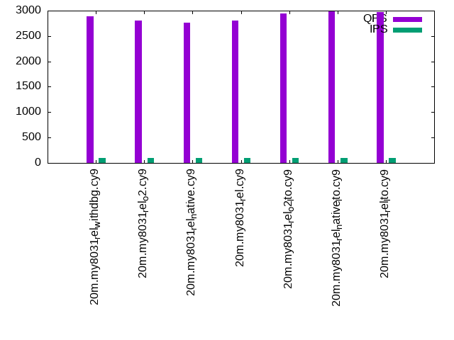
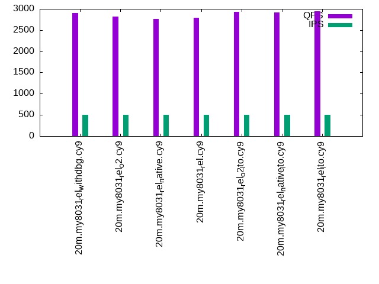
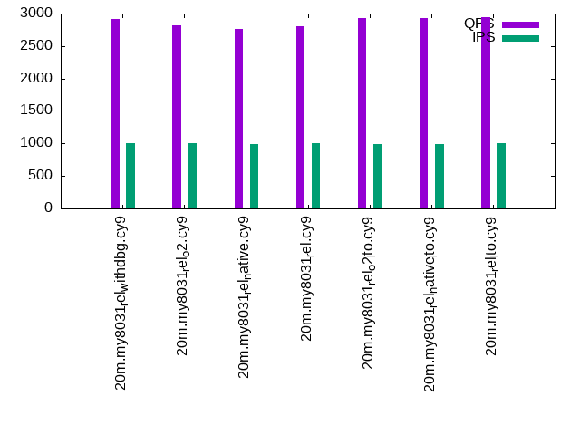

This is a report for the insert benchmark with 20M docs and 1 client(s). It is generated by scripts (bash, awk, sed) and Tufte might not be impressed. An overview of the insert benchmark is here and a short update is here. Below, by DBMS, I mean DBMS+version.config. An example is my8020.c10b40 where my means MySQL, 8020 is version 8.0.20 and c10b40 is the name for the configuration file.
The test server has 8 AMD cores, 16G RAM and an NVMe SSD. It is described here as the Beelink. The benchmark was run with 1 client and there were 1 or 2 connections per client (1 for queries, 1 for inserts). The benchmark loads 20M rows without secondary indexes, creates secondary indexes, loads another 20M rows then does 3 read+write tests for one hour each that do queries as fast as possible with 100, 500 and then 1000 writes/second/client concurrent with the queries. There is 1 table. The database is cached by the storage engine and the only IO is for writes. Clients and the DBMS share one server. The per-database configs are in the per-database subdirectories here.
The tested DBMS are:
The numbers are inserts/s for l.i0 and l.i1, indexed docs (or rows) /s for l.x and queries/s for q*.2. The values are the average rate over the entire test for inserts (IPS) and queries (QPS). The range of values for IPS and QPS is split into 3 parts: bottom 25%, middle 50%, top 25%. Values in the bottom 25% have a red background, values in the top 25% have a green background and values in the middle have no color. A gray background is used for values that can be ignored because the DBMS did not sustain the target insert rate. Red backgrounds are not used when the minimum value is within 80% of the max value.
| dbms | l.i0 | l.x | l.i1 | q100.1 | q500.1 | q1000.1 |
|---|---|---|---|---|---|---|
| 20m.my8031_rel_withdbg.cy9 | 59347 | 152273 | 21209 | 2889 | 2907 | 2915 |
| 20m.my8031_rel_o2.cy9 | 57306 | 143571 | 20182 | 2806 | 2815 | 2817 |
| 20m.my8031_rel_native.cy9 | 58480 | 147794 | 20682 | 2769 | 2763 | 2760 |
| 20m.my8031_rel.cy9 | 58651 | 144604 | 20576 | 2808 | 2797 | 2805 |
| 20m.my8031_rel_o2_lto.cy9 | 59172 | 138621 | 20833 | 2944 | 2931 | 2934 |
| 20m.my8031_rel_native_lto.cy9 | 60423 | 193269 | 21786 | 2991 | 2911 | 2937 |
| 20m.my8031_rel_lto.cy9 | 59524 | 151128 | 21598 | 2972 | 2945 | 2948 |
This table has relative throughput, throughput for the DBMS relative to the DBMS in the first line, using the absolute throughput from the previous table.
| dbms | l.i0 | l.x | l.i1 | q100.1 | q500.1 | q1000.1 |
|---|---|---|---|---|---|---|
| 20m.my8031_rel_withdbg.cy9 | 1.00 | 1.00 | 1.00 | 1.00 | 1.00 | 1.00 |
| 20m.my8031_rel_o2.cy9 | 0.97 | 0.94 | 0.95 | 0.97 | 0.97 | 0.97 |
| 20m.my8031_rel_native.cy9 | 0.99 | 0.97 | 0.98 | 0.96 | 0.95 | 0.95 |
| 20m.my8031_rel.cy9 | 0.99 | 0.95 | 0.97 | 0.97 | 0.96 | 0.96 |
| 20m.my8031_rel_o2_lto.cy9 | 1.00 | 0.91 | 0.98 | 1.02 | 1.01 | 1.01 |
| 20m.my8031_rel_native_lto.cy9 | 1.02 | 1.27 | 1.03 | 1.04 | 1.00 | 1.01 |
| 20m.my8031_rel_lto.cy9 | 1.00 | 0.99 | 1.02 | 1.03 | 1.01 | 1.01 |
This lists the average rate of inserts/s for the tests that do inserts concurrent with queries. For such tests the query rate is listed in the table above. The read+write tests are setup so that the insert rate should match the target rate every second. Cells that are not at least 95% of the target have a red background to indicate a failure to satisfy the target.
| dbms | q100.1 | q500.1 | q1000.1 |
|---|---|---|---|
| my8031_rel_withdbg.cy9 | 100 | 499 | 998 |
| my8031_rel_o2.cy9 | 100 | 499 | 998 |
| my8031_rel_native.cy9 | 100 | 498 | 996 |
| my8031_rel.cy9 | 100 | 499 | 998 |
| my8031_rel_o2_lto.cy9 | 100 | 498 | 997 |
| my8031_rel_native_lto.cy9 | 100 | 498 | 997 |
| my8031_rel_lto.cy9 | 100 | 499 | 998 |
| target | 100 | 500 | 1000 |
l.i0: load without secondary indexes. Graphs for performance per 1-second interval are here.
Average throughput:
Insert response time histogram: each cell has the percentage of responses that take <= the time in the header and max is the max response time in seconds. For the max column values in the top 25% of the range have a red background and in the bottom 25% of the range have a green background. The red background is not used when the min value is within 80% of the max value.
| dbms | 256us | 1ms | 4ms | 16ms | 64ms | 256ms | 1s | 4s | 16s | gt | max |
|---|---|---|---|---|---|---|---|---|---|---|---|
| my8031_rel_withdbg.cy9 | 99.438 | 0.422 | 0.136 | 0.003 | 0.079 | ||||||
| my8031_rel_o2.cy9 | 99.409 | 0.451 | 0.136 | 0.003 | 0.083 | ||||||
| my8031_rel_native.cy9 | 99.416 | 0.440 | 0.140 | 0.003 | 0.076 | ||||||
| my8031_rel.cy9 | 99.440 | 0.451 | 0.106 | 0.003 | 0.098 | ||||||
| my8031_rel_o2_lto.cy9 | 99.436 | 0.411 | 0.149 | 0.004 | 0.101 | ||||||
| my8031_rel_native_lto.cy9 | 99.436 | 0.415 | 0.146 | 0.003 | 0.094 | ||||||
| my8031_rel_lto.cy9 | 99.458 | 0.384 | 0.154 | 0.003 | 0.105 |
Performance metrics for the DBMS listed above. Some are normalized by throughput, others are not. Legend for results is here.
ips qps rps rmbps wps wmbps rpq rkbpq wpi wkbpi csps cpups cspq cpupq dbgb1 dbgb2 rss maxop p50 p99 tag 59347 0 0 0.0 189.0 18.0 0.000 0.000 0.003 0.311 6574 20.5 0.111 28 1.3 9.9 2.5 0.079 59734 53741 20m.my8031_rel_withdbg.cy9 57306 0 0 0.0 184.0 17.4 0.000 0.000 0.003 0.312 6379 20.5 0.111 29 1.3 9.9 2.5 0.083 57493 39422 20m.my8031_rel_o2.cy9 58480 0 0 0.0 187.3 17.8 0.000 0.000 0.003 0.311 6496 20.5 0.111 28 1.3 9.9 2.5 0.076 58635 52047 20m.my8031_rel_native.cy9 58651 0 0 0.0 187.7 17.8 0.000 0.000 0.003 0.311 6508 20.7 0.111 28 1.3 9.9 2.5 0.098 58933 52257 20m.my8031_rel.cy9 59172 0 0 0.0 189.0 18.0 0.000 0.000 0.003 0.311 6574 20.4 0.111 28 1.3 9.9 2.5 0.101 59746 34620 20m.my8031_rel_o2_lto.cy9 60423 0 0 0.0 190.9 18.3 0.000 0.000 0.003 0.310 6656 20.4 0.110 27 1.3 9.9 2.5 0.094 60550 52941 20m.my8031_rel_native_lto.cy9 59524 0 0 0.0 189.6 18.1 0.000 0.000 0.003 0.311 6606 20.3 0.111 27 1.3 9.9 2.5 0.105 59934 35961 20m.my8031_rel_lto.cy9
l.x: create secondary indexes.
Average throughput:
Performance metrics for the DBMS listed above. Some are normalized by throughput, others are not. Legend for results is here.
ips qps rps rmbps wps wmbps rpq rkbpq wpi wkbpi csps cpups cspq cpupq dbgb1 dbgb2 rss maxop p50 p99 tag 152273 0 798 53.3 2615.8 153.3 0.005 0.359 0.017 1.031 10029 43.0 0.066 23 3.0 11.5 3.9 0.011 NA NA 20m.my8031_rel_withdbg.cy9 143571 0 768 51.4 2062.2 140.4 0.005 0.366 0.014 1.002 8923 43.6 0.062 24 3.0 11.5 3.9 0.011 NA NA 20m.my8031_rel_o2.cy9 147794 0 768 51.4 2738.5 151.0 0.005 0.356 0.019 1.046 10274 42.9 0.070 23 3.0 11.5 3.9 0.011 NA NA 20m.my8031_rel_native.cy9 144604 0 768 51.4 2294.8 143.9 0.005 0.364 0.016 1.019 9337 43.9 0.065 24 3.0 11.5 3.9 0.011 NA NA 20m.my8031_rel.cy9 138621 0 717 47.9 2826.8 145.0 0.005 0.354 0.020 1.071 9960 41.2 0.072 24 3.0 11.5 3.9 0.015 NA NA 20m.my8031_rel_o2_lto.cy9 193269 0 1036 69.3 2890.9 191.1 0.005 0.367 0.015 1.012 12261 43.7 0.063 18 3.0 11.5 3.9 0.020 NA NA 20m.my8031_rel_native_lto.cy9 151128 0 798 53.4 2560.3 152.4 0.005 0.362 0.017 1.032 10033 43.2 0.066 23 3.0 11.5 3.9 0.014 NA NA 20m.my8031_rel_lto.cy9
l.i1: continue load after secondary indexes created. Graphs for performance per 1-second interval are here.
Average throughput:
Insert response time histogram: each cell has the percentage of responses that take <= the time in the header and max is the max response time in seconds. For the max column values in the top 25% of the range have a red background and in the bottom 25% of the range have a green background. The red background is not used when the min value is within 80% of the max value.
| dbms | 256us | 1ms | 4ms | 16ms | 64ms | 256ms | 1s | 4s | 16s | gt | max |
|---|---|---|---|---|---|---|---|---|---|---|---|
| my8031_rel_withdbg.cy9 | 98.575 | 1.123 | 0.301 | 0.001 | 0.071 | ||||||
| my8031_rel_o2.cy9 | 98.555 | 1.150 | 0.294 | 0.001 | 0.072 | ||||||
| my8031_rel_native.cy9 | 98.568 | 1.143 | 0.288 | 0.002 | 0.072 | ||||||
| my8031_rel.cy9 | 98.553 | 1.151 | 0.296 | 0.001 | 0.070 | ||||||
| my8031_rel_o2_lto.cy9 | 98.573 | 1.128 | 0.297 | 0.002 | 0.083 | ||||||
| my8031_rel_native_lto.cy9 | 98.599 | 1.094 | 0.306 | 0.002 | 0.079 | ||||||
| my8031_rel_lto.cy9 | 98.596 | 1.094 | 0.308 | 0.002 | 0.086 |
Performance metrics for the DBMS listed above. Some are normalized by throughput, others are not. Legend for results is here.
ips qps rps rmbps wps wmbps rpq rkbpq wpi wkbpi csps cpups cspq cpupq dbgb1 dbgb2 rss maxop p50 p99 tag 21209 0 98 1.5 936.8 36.8 0.005 0.074 0.044 1.779 7699 15.7 0.363 59 7.9 16.4 8.3 0.071 21774 1598 20m.my8031_rel_withdbg.cy9 20182 0 94 1.5 905.4 35.4 0.005 0.074 0.045 1.797 7379 15.2 0.366 60 7.9 16.4 8.3 0.072 20827 1698 20m.my8031_rel_o2.cy9 20682 0 96 1.5 915.9 36.0 0.005 0.074 0.044 1.781 7473 15.3 0.361 59 7.9 16.4 8.3 0.072 21234 1699 20m.my8031_rel_native.cy9 20576 0 95 1.5 918.9 36.0 0.005 0.074 0.045 1.791 7457 15.3 0.362 59 7.9 16.4 8.3 0.070 21176 1598 20m.my8031_rel.cy9 20833 0 96 1.5 922.8 36.2 0.005 0.074 0.044 1.780 7581 15.4 0.364 59 7.9 16.4 8.3 0.083 21327 1648 20m.my8031_rel_o2_lto.cy9 21786 0 101 1.6 957.0 37.7 0.005 0.074 0.044 1.773 7863 15.8 0.361 58 7.9 16.4 8.3 0.079 22425 1599 20m.my8031_rel_native_lto.cy9 21598 0 100 1.6 952.5 37.5 0.005 0.074 0.044 1.776 7853 15.8 0.364 59 7.9 16.4 8.3 0.086 22126 1599 20m.my8031_rel_lto.cy9
q100.1: range queries with 100 insert/s per client. Graphs for performance per 1-second interval are here.
Average throughput:
Query response time histogram: each cell has the percentage of responses that take <= the time in the header and max is the max response time in seconds. For max values in the top 25% of the range have a red background and in the bottom 25% of the range have a green background. The red background is not used when the min value is within 80% of the max value.
| dbms | 256us | 1ms | 4ms | 16ms | 64ms | 256ms | 1s | 4s | 16s | gt | max |
|---|---|---|---|---|---|---|---|---|---|---|---|
| my8031_rel_withdbg.cy9 | 9.571 | 90.428 | nonzero | nonzero | nonzero | 0.022 | |||||
| my8031_rel_o2.cy9 | 3.871 | 96.129 | nonzero | nonzero | nonzero | 0.018 | |||||
| my8031_rel_native.cy9 | 3.162 | 96.837 | nonzero | nonzero | 0.015 | ||||||
| my8031_rel.cy9 | 3.633 | 96.366 | nonzero | nonzero | nonzero | 0.017 | |||||
| my8031_rel_o2_lto.cy9 | 17.186 | 82.813 | nonzero | nonzero | nonzero | 0.023 | |||||
| my8031_rel_native_lto.cy9 | 20.410 | 79.590 | nonzero | nonzero | nonzero | 0.023 | |||||
| my8031_rel_lto.cy9 | 19.882 | 80.117 | nonzero | nonzero | nonzero | 0.022 |
Insert response time histogram: each cell has the percentage of responses that take <= the time in the header and max is the max response time in seconds. For max values in the top 25% of the range have a red background and in the bottom 25% of the range have a green background. The red background is not used when the min value is within 80% of the max value.
| dbms | 256us | 1ms | 4ms | 16ms | 64ms | 256ms | 1s | 4s | 16s | gt | max |
|---|---|---|---|---|---|---|---|---|---|---|---|
| my8031_rel_withdbg.cy9 | 98.833 | 0.472 | 0.694 | 0.026 | |||||||
| my8031_rel_o2.cy9 | 98.722 | 0.611 | 0.667 | 0.026 | |||||||
| my8031_rel_native.cy9 | 98.917 | 0.500 | 0.583 | 0.026 | |||||||
| my8031_rel.cy9 | 98.528 | 0.861 | 0.611 | 0.029 | |||||||
| my8031_rel_o2_lto.cy9 | 99.028 | 0.278 | 0.694 | 0.034 | |||||||
| my8031_rel_native_lto.cy9 | 98.972 | 0.444 | 0.583 | 0.027 | |||||||
| my8031_rel_lto.cy9 | 98.917 | 0.444 | 0.639 | 0.030 |
Performance metrics for the DBMS listed above. Some are normalized by throughput, others are not. Legend for results is here.
ips qps rps rmbps wps wmbps rpq rkbpq wpi wkbpi csps cpups cspq cpupq dbgb1 dbgb2 rss maxop p50 p99 tag 100 2889 0 0.0 183.1 4.5 0.000 0.000 1.835 46.399 11988 13.1 4.150 363 8.0 16.5 8.4 0.022 2863 2764 20m.my8031_rel_withdbg.cy9 100 2806 0 0.0 183.4 4.5 0.000 0.000 1.841 46.515 11706 13.2 4.171 376 8.0 16.5 8.4 0.018 2796 2685 20m.my8031_rel_o2.cy9 100 2769 0 0.0 182.8 4.5 0.000 0.000 1.835 46.416 11541 13.2 4.169 381 8.0 16.5 8.4 0.015 2751 2653 20m.my8031_rel_native.cy9 100 2808 0 0.0 185.9 4.6 0.000 0.000 1.865 47.194 11688 13.3 4.163 379 8.0 16.5 8.4 0.017 2797 2685 20m.my8031_rel.cy9 100 2944 0 0.0 184.3 4.6 0.000 0.000 1.849 46.747 12218 12.8 4.150 348 8.0 16.5 8.4 0.023 2925 2797 20m.my8031_rel_o2_lto.cy9 100 2991 0 0.0 182.0 4.5 0.000 0.000 1.828 46.269 12407 12.8 4.148 342 8.0 16.5 8.4 0.023 2975 2844 20m.my8031_rel_native_lto.cy9 100 2972 0 0.0 185.2 4.6 0.000 0.000 1.860 47.064 12344 12.9 4.153 347 8.0 16.5 8.4 0.022 2957 2829 20m.my8031_rel_lto.cy9
q500.1: range queries with 500 insert/s per client. Graphs for performance per 1-second interval are here.
Average throughput:
Query response time histogram: each cell has the percentage of responses that take <= the time in the header and max is the max response time in seconds. For max values in the top 25% of the range have a red background and in the bottom 25% of the range have a green background. The red background is not used when the min value is within 80% of the max value.
| dbms | 256us | 1ms | 4ms | 16ms | 64ms | 256ms | 1s | 4s | 16s | gt | max |
|---|---|---|---|---|---|---|---|---|---|---|---|
| my8031_rel_withdbg.cy9 | 12.500 | 87.498 | 0.001 | 0.001 | nonzero | 0.019 | |||||
| my8031_rel_o2.cy9 | 4.052 | 95.946 | 0.001 | 0.001 | nonzero | 0.026 | |||||
| my8031_rel_native.cy9 | 2.848 | 97.151 | 0.001 | 0.001 | nonzero | 0.018 | |||||
| my8031_rel.cy9 | 3.733 | 96.266 | nonzero | 0.001 | nonzero | 0.018 | |||||
| my8031_rel_o2_lto.cy9 | 15.853 | 84.145 | 0.001 | nonzero | nonzero | 0.021 | |||||
| my8031_rel_native_lto.cy9 | 15.760 | 84.239 | 0.001 | 0.001 | nonzero | 0.020 | |||||
| my8031_rel_lto.cy9 | 17.958 | 82.040 | nonzero | 0.001 | nonzero | 0.023 |
Insert response time histogram: each cell has the percentage of responses that take <= the time in the header and max is the max response time in seconds. For max values in the top 25% of the range have a red background and in the bottom 25% of the range have a green background. The red background is not used when the min value is within 80% of the max value.
| dbms | 256us | 1ms | 4ms | 16ms | 64ms | 256ms | 1s | 4s | 16s | gt | max |
|---|---|---|---|---|---|---|---|---|---|---|---|
| my8031_rel_withdbg.cy9 | 98.822 | 0.728 | 0.450 | 0.025 | |||||||
| my8031_rel_o2.cy9 | 98.744 | 0.744 | 0.511 | 0.029 | |||||||
| my8031_rel_native.cy9 | 99.133 | 0.322 | 0.544 | 0.026 | |||||||
| my8031_rel.cy9 | 98.983 | 0.483 | 0.533 | 0.025 | |||||||
| my8031_rel_o2_lto.cy9 | 98.883 | 0.617 | 0.500 | 0.031 | |||||||
| my8031_rel_native_lto.cy9 | 99.122 | 0.317 | 0.561 | 0.028 | |||||||
| my8031_rel_lto.cy9 | 99.028 | 0.433 | 0.539 | 0.027 |
Performance metrics for the DBMS listed above. Some are normalized by throughput, others are not. Legend for results is here.
ips qps rps rmbps wps wmbps rpq rkbpq wpi wkbpi csps cpups cspq cpupq dbgb1 dbgb2 rss maxop p50 p99 tag 499 2907 0 0.0 49.2 1.6 0.000 0.000 0.099 3.201 11699 13.4 4.024 369 8.4 17.0 8.8 0.019 2893 2777 20m.my8031_rel_withdbg.cy9 499 2815 0 0.0 49.8 1.6 0.000 0.000 0.100 3.230 11353 13.4 4.033 381 8.4 17.0 8.8 0.026 2797 2687 20m.my8031_rel_o2.cy9 498 2763 0 0.0 50.0 1.6 0.000 0.000 0.100 3.246 11163 13.4 4.040 388 8.4 17.0 8.8 0.018 2749 2637 20m.my8031_rel_native.cy9 499 2797 0 0.0 48.2 1.5 0.000 0.000 0.097 3.151 11267 13.4 4.028 383 8.4 17.0 8.8 0.018 2781 2683 20m.my8031_rel.cy9 498 2931 0 0.0 50.1 1.6 0.000 0.000 0.101 3.261 11811 13.4 4.029 366 8.4 17.0 8.8 0.021 2925 2781 20m.my8031_rel_o2_lto.cy9 498 2911 0 0.0 52.6 1.7 0.000 0.000 0.106 3.408 11736 13.3 4.031 365 8.4 17.0 8.8 0.020 2908 2781 20m.my8031_rel_native_lto.cy9 499 2945 0 0.0 49.2 1.6 0.000 0.000 0.099 3.212 11871 13.4 4.031 364 8.4 17.0 8.8 0.023 2926 2813 20m.my8031_rel_lto.cy9
q1000.1: range queries with 1000 insert/s per client. Graphs for performance per 1-second interval are here.
Average throughput:
Query response time histogram: each cell has the percentage of responses that take <= the time in the header and max is the max response time in seconds. For max values in the top 25% of the range have a red background and in the bottom 25% of the range have a green background. The red background is not used when the min value is within 80% of the max value.
| dbms | 256us | 1ms | 4ms | 16ms | 64ms | 256ms | 1s | 4s | 16s | gt | max |
|---|---|---|---|---|---|---|---|---|---|---|---|
| my8031_rel_withdbg.cy9 | 12.216 | 87.781 | 0.001 | 0.001 | nonzero | 0.020 | |||||
| my8031_rel_o2.cy9 | 4.239 | 95.759 | 0.001 | nonzero | nonzero | 0.019 | |||||
| my8031_rel_native.cy9 | 4.150 | 95.847 | 0.001 | nonzero | nonzero | 0.019 | |||||
| my8031_rel.cy9 | 4.301 | 95.698 | 0.001 | nonzero | nonzero | 0.018 | |||||
| my8031_rel_o2_lto.cy9 | 15.620 | 84.378 | 0.001 | nonzero | 0.001 | 0.026 | |||||
| my8031_rel_native_lto.cy9 | 16.314 | 83.684 | 0.001 | 0.001 | nonzero | 0.026 | |||||
| my8031_rel_lto.cy9 | 17.887 | 82.111 | 0.001 | nonzero | nonzero | 0.024 |
Insert response time histogram: each cell has the percentage of responses that take <= the time in the header and max is the max response time in seconds. For max values in the top 25% of the range have a red background and in the bottom 25% of the range have a green background. The red background is not used when the min value is within 80% of the max value.
| dbms | 256us | 1ms | 4ms | 16ms | 64ms | 256ms | 1s | 4s | 16s | gt | max |
|---|---|---|---|---|---|---|---|---|---|---|---|
| my8031_rel_withdbg.cy9 | 99.167 | 0.572 | 0.261 | 0.026 | |||||||
| my8031_rel_o2.cy9 | 99.317 | 0.378 | 0.306 | 0.026 | |||||||
| my8031_rel_native.cy9 | 99.264 | 0.456 | 0.281 | 0.030 | |||||||
| my8031_rel.cy9 | 99.364 | 0.361 | 0.275 | 0.026 | |||||||
| my8031_rel_o2_lto.cy9 | 99.231 | 0.483 | 0.286 | 0.031 | |||||||
| my8031_rel_native_lto.cy9 | 99.183 | 0.558 | 0.258 | 0.031 | |||||||
| my8031_rel_lto.cy9 | 99.344 | 0.369 | 0.286 | 0.030 |
Performance metrics for the DBMS listed above. Some are normalized by throughput, others are not. Legend for results is here.
ips qps rps rmbps wps wmbps rpq rkbpq wpi wkbpi csps cpups cspq cpupq dbgb1 dbgb2 rss maxop p50 p99 tag 998 2915 0 0.0 157.3 4.4 0.000 0.000 0.158 4.563 12193 13.6 4.183 373 8.8 17.4 9.2 0.020 2893 2764 20m.my8031_rel_withdbg.cy9 998 2817 0 0.0 156.0 4.4 0.000 0.000 0.156 4.531 11801 13.8 4.190 392 8.8 17.4 9.2 0.019 2797 2685 20m.my8031_rel_o2.cy9 996 2760 0 0.0 155.5 4.4 0.000 0.000 0.156 4.527 11594 13.6 4.201 394 8.8 17.4 9.2 0.019 2749 2637 20m.my8031_rel_native.cy9 998 2805 0 0.0 155.4 4.4 0.000 0.000 0.156 4.525 11742 13.7 4.186 391 8.8 17.4 9.2 0.018 2783 2669 20m.my8031_rel.cy9 997 2934 0 0.0 156.0 4.4 0.000 0.000 0.156 4.528 12248 13.5 4.174 368 8.8 17.4 9.2 0.026 2925 2781 20m.my8031_rel_o2_lto.cy9 997 2937 0 0.0 157.2 4.4 0.000 0.000 0.158 4.558 12257 13.5 4.173 368 8.8 17.4 9.2 0.026 2925 2797 20m.my8031_rel_native_lto.cy9 998 2948 0 0.0 156.9 4.4 0.000 0.000 0.157 4.557 12305 13.5 4.173 366 8.8 17.4 9.2 0.024 2940 2812 20m.my8031_rel_lto.cy9
l.i0: load without secondary indexes
Performance metrics for all DBMS, not just the ones listed above. Some are normalized by throughput, others are not. Legend for results is here.
ips qps rps rmbps wps wmbps rpq rkbpq wpi wkbpi csps cpups cspq cpupq dbgb1 dbgb2 rss maxop p50 p99 tag 59347 0 0 0.0 189.0 18.0 0.000 0.000 0.003 0.311 6574 20.5 0.111 28 1.3 9.9 2.5 0.079 59734 53741 20m.my8031_rel_withdbg.cy9 57306 0 0 0.0 184.0 17.4 0.000 0.000 0.003 0.312 6379 20.5 0.111 29 1.3 9.9 2.5 0.083 57493 39422 20m.my8031_rel_o2.cy9 58480 0 0 0.0 187.3 17.8 0.000 0.000 0.003 0.311 6496 20.5 0.111 28 1.3 9.9 2.5 0.076 58635 52047 20m.my8031_rel_native.cy9 58651 0 0 0.0 187.7 17.8 0.000 0.000 0.003 0.311 6508 20.7 0.111 28 1.3 9.9 2.5 0.098 58933 52257 20m.my8031_rel.cy9 59172 0 0 0.0 189.0 18.0 0.000 0.000 0.003 0.311 6574 20.4 0.111 28 1.3 9.9 2.5 0.101 59746 34620 20m.my8031_rel_o2_lto.cy9 60423 0 0 0.0 190.9 18.3 0.000 0.000 0.003 0.310 6656 20.4 0.110 27 1.3 9.9 2.5 0.094 60550 52941 20m.my8031_rel_native_lto.cy9 59524 0 0 0.0 189.6 18.1 0.000 0.000 0.003 0.311 6606 20.3 0.111 27 1.3 9.9 2.5 0.105 59934 35961 20m.my8031_rel_lto.cy9
l.x: create secondary indexes
Performance metrics for all DBMS, not just the ones listed above. Some are normalized by throughput, others are not. Legend for results is here.
ips qps rps rmbps wps wmbps rpq rkbpq wpi wkbpi csps cpups cspq cpupq dbgb1 dbgb2 rss maxop p50 p99 tag 152273 0 798 53.3 2615.8 153.3 0.005 0.359 0.017 1.031 10029 43.0 0.066 23 3.0 11.5 3.9 0.011 NA NA 20m.my8031_rel_withdbg.cy9 143571 0 768 51.4 2062.2 140.4 0.005 0.366 0.014 1.002 8923 43.6 0.062 24 3.0 11.5 3.9 0.011 NA NA 20m.my8031_rel_o2.cy9 147794 0 768 51.4 2738.5 151.0 0.005 0.356 0.019 1.046 10274 42.9 0.070 23 3.0 11.5 3.9 0.011 NA NA 20m.my8031_rel_native.cy9 144604 0 768 51.4 2294.8 143.9 0.005 0.364 0.016 1.019 9337 43.9 0.065 24 3.0 11.5 3.9 0.011 NA NA 20m.my8031_rel.cy9 138621 0 717 47.9 2826.8 145.0 0.005 0.354 0.020 1.071 9960 41.2 0.072 24 3.0 11.5 3.9 0.015 NA NA 20m.my8031_rel_o2_lto.cy9 193269 0 1036 69.3 2890.9 191.1 0.005 0.367 0.015 1.012 12261 43.7 0.063 18 3.0 11.5 3.9 0.020 NA NA 20m.my8031_rel_native_lto.cy9 151128 0 798 53.4 2560.3 152.4 0.005 0.362 0.017 1.032 10033 43.2 0.066 23 3.0 11.5 3.9 0.014 NA NA 20m.my8031_rel_lto.cy9
l.i1: continue load after secondary indexes created
Performance metrics for all DBMS, not just the ones listed above. Some are normalized by throughput, others are not. Legend for results is here.
ips qps rps rmbps wps wmbps rpq rkbpq wpi wkbpi csps cpups cspq cpupq dbgb1 dbgb2 rss maxop p50 p99 tag 21209 0 98 1.5 936.8 36.8 0.005 0.074 0.044 1.779 7699 15.7 0.363 59 7.9 16.4 8.3 0.071 21774 1598 20m.my8031_rel_withdbg.cy9 20182 0 94 1.5 905.4 35.4 0.005 0.074 0.045 1.797 7379 15.2 0.366 60 7.9 16.4 8.3 0.072 20827 1698 20m.my8031_rel_o2.cy9 20682 0 96 1.5 915.9 36.0 0.005 0.074 0.044 1.781 7473 15.3 0.361 59 7.9 16.4 8.3 0.072 21234 1699 20m.my8031_rel_native.cy9 20576 0 95 1.5 918.9 36.0 0.005 0.074 0.045 1.791 7457 15.3 0.362 59 7.9 16.4 8.3 0.070 21176 1598 20m.my8031_rel.cy9 20833 0 96 1.5 922.8 36.2 0.005 0.074 0.044 1.780 7581 15.4 0.364 59 7.9 16.4 8.3 0.083 21327 1648 20m.my8031_rel_o2_lto.cy9 21786 0 101 1.6 957.0 37.7 0.005 0.074 0.044 1.773 7863 15.8 0.361 58 7.9 16.4 8.3 0.079 22425 1599 20m.my8031_rel_native_lto.cy9 21598 0 100 1.6 952.5 37.5 0.005 0.074 0.044 1.776 7853 15.8 0.364 59 7.9 16.4 8.3 0.086 22126 1599 20m.my8031_rel_lto.cy9
q100.1: range queries with 100 insert/s per client
Performance metrics for all DBMS, not just the ones listed above. Some are normalized by throughput, others are not. Legend for results is here.
ips qps rps rmbps wps wmbps rpq rkbpq wpi wkbpi csps cpups cspq cpupq dbgb1 dbgb2 rss maxop p50 p99 tag 100 2889 0 0.0 183.1 4.5 0.000 0.000 1.835 46.399 11988 13.1 4.150 363 8.0 16.5 8.4 0.022 2863 2764 20m.my8031_rel_withdbg.cy9 100 2806 0 0.0 183.4 4.5 0.000 0.000 1.841 46.515 11706 13.2 4.171 376 8.0 16.5 8.4 0.018 2796 2685 20m.my8031_rel_o2.cy9 100 2769 0 0.0 182.8 4.5 0.000 0.000 1.835 46.416 11541 13.2 4.169 381 8.0 16.5 8.4 0.015 2751 2653 20m.my8031_rel_native.cy9 100 2808 0 0.0 185.9 4.6 0.000 0.000 1.865 47.194 11688 13.3 4.163 379 8.0 16.5 8.4 0.017 2797 2685 20m.my8031_rel.cy9 100 2944 0 0.0 184.3 4.6 0.000 0.000 1.849 46.747 12218 12.8 4.150 348 8.0 16.5 8.4 0.023 2925 2797 20m.my8031_rel_o2_lto.cy9 100 2991 0 0.0 182.0 4.5 0.000 0.000 1.828 46.269 12407 12.8 4.148 342 8.0 16.5 8.4 0.023 2975 2844 20m.my8031_rel_native_lto.cy9 100 2972 0 0.0 185.2 4.6 0.000 0.000 1.860 47.064 12344 12.9 4.153 347 8.0 16.5 8.4 0.022 2957 2829 20m.my8031_rel_lto.cy9
q500.1: range queries with 500 insert/s per client
Performance metrics for all DBMS, not just the ones listed above. Some are normalized by throughput, others are not. Legend for results is here.
ips qps rps rmbps wps wmbps rpq rkbpq wpi wkbpi csps cpups cspq cpupq dbgb1 dbgb2 rss maxop p50 p99 tag 499 2907 0 0.0 49.2 1.6 0.000 0.000 0.099 3.201 11699 13.4 4.024 369 8.4 17.0 8.8 0.019 2893 2777 20m.my8031_rel_withdbg.cy9 499 2815 0 0.0 49.8 1.6 0.000 0.000 0.100 3.230 11353 13.4 4.033 381 8.4 17.0 8.8 0.026 2797 2687 20m.my8031_rel_o2.cy9 498 2763 0 0.0 50.0 1.6 0.000 0.000 0.100 3.246 11163 13.4 4.040 388 8.4 17.0 8.8 0.018 2749 2637 20m.my8031_rel_native.cy9 499 2797 0 0.0 48.2 1.5 0.000 0.000 0.097 3.151 11267 13.4 4.028 383 8.4 17.0 8.8 0.018 2781 2683 20m.my8031_rel.cy9 498 2931 0 0.0 50.1 1.6 0.000 0.000 0.101 3.261 11811 13.4 4.029 366 8.4 17.0 8.8 0.021 2925 2781 20m.my8031_rel_o2_lto.cy9 498 2911 0 0.0 52.6 1.7 0.000 0.000 0.106 3.408 11736 13.3 4.031 365 8.4 17.0 8.8 0.020 2908 2781 20m.my8031_rel_native_lto.cy9 499 2945 0 0.0 49.2 1.6 0.000 0.000 0.099 3.212 11871 13.4 4.031 364 8.4 17.0 8.8 0.023 2926 2813 20m.my8031_rel_lto.cy9
q1000.1: range queries with 1000 insert/s per client
Performance metrics for all DBMS, not just the ones listed above. Some are normalized by throughput, others are not. Legend for results is here.
ips qps rps rmbps wps wmbps rpq rkbpq wpi wkbpi csps cpups cspq cpupq dbgb1 dbgb2 rss maxop p50 p99 tag 998 2915 0 0.0 157.3 4.4 0.000 0.000 0.158 4.563 12193 13.6 4.183 373 8.8 17.4 9.2 0.020 2893 2764 20m.my8031_rel_withdbg.cy9 998 2817 0 0.0 156.0 4.4 0.000 0.000 0.156 4.531 11801 13.8 4.190 392 8.8 17.4 9.2 0.019 2797 2685 20m.my8031_rel_o2.cy9 996 2760 0 0.0 155.5 4.4 0.000 0.000 0.156 4.527 11594 13.6 4.201 394 8.8 17.4 9.2 0.019 2749 2637 20m.my8031_rel_native.cy9 998 2805 0 0.0 155.4 4.4 0.000 0.000 0.156 4.525 11742 13.7 4.186 391 8.8 17.4 9.2 0.018 2783 2669 20m.my8031_rel.cy9 997 2934 0 0.0 156.0 4.4 0.000 0.000 0.156 4.528 12248 13.5 4.174 368 8.8 17.4 9.2 0.026 2925 2781 20m.my8031_rel_o2_lto.cy9 997 2937 0 0.0 157.2 4.4 0.000 0.000 0.158 4.558 12257 13.5 4.173 368 8.8 17.4 9.2 0.026 2925 2797 20m.my8031_rel_native_lto.cy9 998 2948 0 0.0 156.9 4.4 0.000 0.000 0.157 4.557 12305 13.5 4.173 366 8.8 17.4 9.2 0.024 2940 2812 20m.my8031_rel_lto.cy9
Insert response time histogram
256us 1ms 4ms 16ms 64ms 256ms 1s 4s 16s gt max tag 0.000 0.000 99.438 0.422 0.136 0.003 0.000 0.000 0.000 0.000 0.079 my8031_rel_withdbg.cy9 0.000 0.000 99.409 0.451 0.136 0.003 0.000 0.000 0.000 0.000 0.083 my8031_rel_o2.cy9 0.000 0.000 99.416 0.440 0.140 0.003 0.000 0.000 0.000 0.000 0.076 my8031_rel_native.cy9 0.000 0.000 99.440 0.451 0.106 0.003 0.000 0.000 0.000 0.000 0.098 my8031_rel.cy9 0.000 0.000 99.436 0.411 0.149 0.004 0.000 0.000 0.000 0.000 0.101 my8031_rel_o2_lto.cy9 0.000 0.000 99.436 0.415 0.146 0.003 0.000 0.000 0.000 0.000 0.094 my8031_rel_native_lto.cy9 0.000 0.000 99.458 0.384 0.154 0.003 0.000 0.000 0.000 0.000 0.105 my8031_rel_lto.cy9
TODO - determine whether there is data for create index response time
Insert response time histogram
256us 1ms 4ms 16ms 64ms 256ms 1s 4s 16s gt max tag 0.000 0.000 98.575 1.123 0.301 0.001 0.000 0.000 0.000 0.000 0.071 my8031_rel_withdbg.cy9 0.000 0.000 98.555 1.150 0.294 0.001 0.000 0.000 0.000 0.000 0.072 my8031_rel_o2.cy9 0.000 0.000 98.568 1.143 0.288 0.002 0.000 0.000 0.000 0.000 0.072 my8031_rel_native.cy9 0.000 0.000 98.553 1.151 0.296 0.001 0.000 0.000 0.000 0.000 0.070 my8031_rel.cy9 0.000 0.000 98.573 1.128 0.297 0.002 0.000 0.000 0.000 0.000 0.083 my8031_rel_o2_lto.cy9 0.000 0.000 98.599 1.094 0.306 0.002 0.000 0.000 0.000 0.000 0.079 my8031_rel_native_lto.cy9 0.000 0.000 98.596 1.094 0.308 0.002 0.000 0.000 0.000 0.000 0.086 my8031_rel_lto.cy9
Query response time histogram
256us 1ms 4ms 16ms 64ms 256ms 1s 4s 16s gt max tag 9.571 90.428 nonzero nonzero nonzero 0.000 0.000 0.000 0.000 0.000 0.022 my8031_rel_withdbg.cy9 3.871 96.129 nonzero nonzero nonzero 0.000 0.000 0.000 0.000 0.000 0.018 my8031_rel_o2.cy9 3.162 96.837 nonzero nonzero 0.000 0.000 0.000 0.000 0.000 0.000 0.015 my8031_rel_native.cy9 3.633 96.366 nonzero nonzero nonzero 0.000 0.000 0.000 0.000 0.000 0.017 my8031_rel.cy9 17.186 82.813 nonzero nonzero nonzero 0.000 0.000 0.000 0.000 0.000 0.023 my8031_rel_o2_lto.cy9 20.410 79.590 nonzero nonzero nonzero 0.000 0.000 0.000 0.000 0.000 0.023 my8031_rel_native_lto.cy9 19.882 80.117 nonzero nonzero nonzero 0.000 0.000 0.000 0.000 0.000 0.022 my8031_rel_lto.cy9
Insert response time histogram
256us 1ms 4ms 16ms 64ms 256ms 1s 4s 16s gt max tag 0.000 0.000 98.833 0.472 0.694 0.000 0.000 0.000 0.000 0.000 0.026 my8031_rel_withdbg.cy9 0.000 0.000 98.722 0.611 0.667 0.000 0.000 0.000 0.000 0.000 0.026 my8031_rel_o2.cy9 0.000 0.000 98.917 0.500 0.583 0.000 0.000 0.000 0.000 0.000 0.026 my8031_rel_native.cy9 0.000 0.000 98.528 0.861 0.611 0.000 0.000 0.000 0.000 0.000 0.029 my8031_rel.cy9 0.000 0.000 99.028 0.278 0.694 0.000 0.000 0.000 0.000 0.000 0.034 my8031_rel_o2_lto.cy9 0.000 0.000 98.972 0.444 0.583 0.000 0.000 0.000 0.000 0.000 0.027 my8031_rel_native_lto.cy9 0.000 0.000 98.917 0.444 0.639 0.000 0.000 0.000 0.000 0.000 0.030 my8031_rel_lto.cy9
Query response time histogram
256us 1ms 4ms 16ms 64ms 256ms 1s 4s 16s gt max tag 12.500 87.498 0.001 0.001 nonzero 0.000 0.000 0.000 0.000 0.000 0.019 my8031_rel_withdbg.cy9 4.052 95.946 0.001 0.001 nonzero 0.000 0.000 0.000 0.000 0.000 0.026 my8031_rel_o2.cy9 2.848 97.151 0.001 0.001 nonzero 0.000 0.000 0.000 0.000 0.000 0.018 my8031_rel_native.cy9 3.733 96.266 nonzero 0.001 nonzero 0.000 0.000 0.000 0.000 0.000 0.018 my8031_rel.cy9 15.853 84.145 0.001 nonzero nonzero 0.000 0.000 0.000 0.000 0.000 0.021 my8031_rel_o2_lto.cy9 15.760 84.239 0.001 0.001 nonzero 0.000 0.000 0.000 0.000 0.000 0.020 my8031_rel_native_lto.cy9 17.958 82.040 nonzero 0.001 nonzero 0.000 0.000 0.000 0.000 0.000 0.023 my8031_rel_lto.cy9
Insert response time histogram
256us 1ms 4ms 16ms 64ms 256ms 1s 4s 16s gt max tag 0.000 0.000 98.822 0.728 0.450 0.000 0.000 0.000 0.000 0.000 0.025 my8031_rel_withdbg.cy9 0.000 0.000 98.744 0.744 0.511 0.000 0.000 0.000 0.000 0.000 0.029 my8031_rel_o2.cy9 0.000 0.000 99.133 0.322 0.544 0.000 0.000 0.000 0.000 0.000 0.026 my8031_rel_native.cy9 0.000 0.000 98.983 0.483 0.533 0.000 0.000 0.000 0.000 0.000 0.025 my8031_rel.cy9 0.000 0.000 98.883 0.617 0.500 0.000 0.000 0.000 0.000 0.000 0.031 my8031_rel_o2_lto.cy9 0.000 0.000 99.122 0.317 0.561 0.000 0.000 0.000 0.000 0.000 0.028 my8031_rel_native_lto.cy9 0.000 0.000 99.028 0.433 0.539 0.000 0.000 0.000 0.000 0.000 0.027 my8031_rel_lto.cy9
Query response time histogram
256us 1ms 4ms 16ms 64ms 256ms 1s 4s 16s gt max tag 12.216 87.781 0.001 0.001 nonzero 0.000 0.000 0.000 0.000 0.000 0.020 my8031_rel_withdbg.cy9 4.239 95.759 0.001 nonzero nonzero 0.000 0.000 0.000 0.000 0.000 0.019 my8031_rel_o2.cy9 4.150 95.847 0.001 nonzero nonzero 0.000 0.000 0.000 0.000 0.000 0.019 my8031_rel_native.cy9 4.301 95.698 0.001 nonzero nonzero 0.000 0.000 0.000 0.000 0.000 0.018 my8031_rel.cy9 15.620 84.378 0.001 nonzero 0.001 0.000 0.000 0.000 0.000 0.000 0.026 my8031_rel_o2_lto.cy9 16.314 83.684 0.001 0.001 nonzero 0.000 0.000 0.000 0.000 0.000 0.026 my8031_rel_native_lto.cy9 17.887 82.111 0.001 nonzero nonzero 0.000 0.000 0.000 0.000 0.000 0.024 my8031_rel_lto.cy9
Insert response time histogram
256us 1ms 4ms 16ms 64ms 256ms 1s 4s 16s gt max tag 0.000 0.000 99.167 0.572 0.261 0.000 0.000 0.000 0.000 0.000 0.026 my8031_rel_withdbg.cy9 0.000 0.000 99.317 0.378 0.306 0.000 0.000 0.000 0.000 0.000 0.026 my8031_rel_o2.cy9 0.000 0.000 99.264 0.456 0.281 0.000 0.000 0.000 0.000 0.000 0.030 my8031_rel_native.cy9 0.000 0.000 99.364 0.361 0.275 0.000 0.000 0.000 0.000 0.000 0.026 my8031_rel.cy9 0.000 0.000 99.231 0.483 0.286 0.000 0.000 0.000 0.000 0.000 0.031 my8031_rel_o2_lto.cy9 0.000 0.000 99.183 0.558 0.258 0.000 0.000 0.000 0.000 0.000 0.031 my8031_rel_native_lto.cy9 0.000 0.000 99.344 0.369 0.286 0.000 0.000 0.000 0.000 0.000 0.030 my8031_rel_lto.cy9